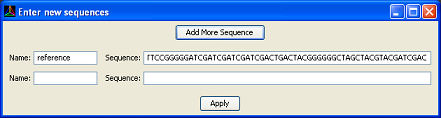

SeqVis provides a range of tools to navigate and analyze the sequences.
Sequence Search by Name
Search for a sequence or a set of sequences by sequence name. All matching sequence's must contain the search string as an exact substring. Matching sequences will be highlighted on screen.
Sequence Search by Sub-Sequence
Search for a sequence or a set of sequences by sub-sequence. All matching sequence must contain the search string as an exact substring. Matching sequences will be highlighted on screen.

Add New Sequences
Add new sequence(s) to the dataset by manually entering the name and the nucleotide sequence of the sequence.

Display Sequences details
Show the name of the sequence. The sequences are also allowed to be displayed/hidden.
Lower Dimensions View
Visualize the dataset in a lower dimensional model (a triangular de Finetti plot or a linear plot). In lower dimensions view, composition of two nucleotides are pooled together.
Tetrahedron View Press this menu to resume the tetrahedron view.